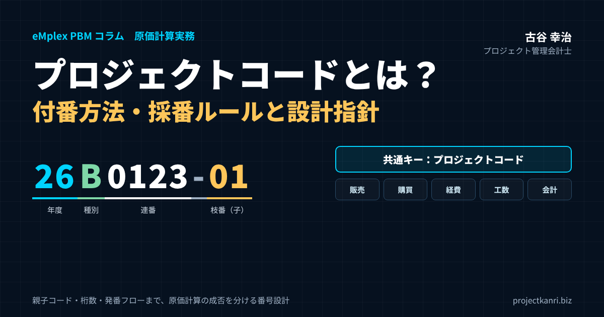

プロジェクトコードとは？付番方法・採番ルールと設計指針を実務者向けに完全解説

結論：プロジェクトコードとは「経営データの背骨」であり、付番方法が原価計算の成否を決める
プロジェクト管理会計研究所の古谷です。最初に結論を申し上げます。プロジェクトコードとは、単なる案件の管理番号ではありません。販売、購買、経費、工数、会計という複数のシステムを横断して、すべての収益と原価を一つの案件に束ねる「共通キー」であり、経営データの背骨です。そして、その付番方法、つまり採番ルールの設計を誤ると、プロジェクト別原価計算は何年たっても正しく回りません。
プロジェクト別原価計算を導入しようとしたとき、多くの会社が最初につまずくのは、実は計算方法ではありません。「案件にどうコードを振るか」という、地味ですが避けて通れない設計です。適当な連番で付番してしまうと、後になって顧客別や年度別の集計ができず、受注単位と収益認識の単位がずれ、システムを入れ替えるたびにコード体系を一から作り直すことになります。
この記事の要点
- プロジェクトコードとは：販売・購買・経費・工数・会計のすべての取引を案件単位で束ねる共通キー（プロジェクト番号・工事番号・製番とも呼ぶ）
- 付番の前に：プロジェクト単位（履行義務）・勘定科目・原価部門・原価計算期間の4つを決める
- 付番方法：単純連番／受注番号＋枝番（親子コード）／取引先略称＋連番／年度＋種別＋連番。迷ったら親子コードが基本
- 設計原則：直感的で誤入力しにくく、拡張でき、全システム共通。変わりうる属性はコードに埋め込まずマスタで持つ
- 運用：発番は管理部門が一元化。必須項目の登録と、終了時のクローズ手続きまで決めておく
厄介なのは、プロジェクトコードの桁数、構成ルール、親子構造、使える文字の種類といった基本仕様は、一度運用を始めると途中で変えることが極めて難しいという点です。コードは過去の取引データすべてに刻まれていきますから、体系を変えれば過去と現在の比較ができなくなり、各システムのマスタも一斉に直さなければなりません。つまり、最初の設計の誤りは、そのまま将来の管理会計のコストと、経営判断の誤りに直結するのです。
私はこれまで200社を超えるプロジェクト型ビジネスの経営管理を支援してきましたが、原価計算がうまく回っていない会社を診断すると、かなりの確率でプロジェクトコードの付番方法に問題が見つかります。同じ案件に営業と経理で別々の番号を振っている、部門コードを埋め込んだために組織変更のたびに体系が崩れた、桁数が足りずに枝番の枝番が生まれている。どれも、導入時に少し考えておけば防げたものばかりです。
本稿では、プロジェクトコードとは何かという定義から始め、付番の前に決めておくべき4つの基本事項、設計の5原則、実務で使える付番方法の4パターンとその比較、親コード・子コードの設計、桁数や文字種などシステム制約のチェックリスト、発番のタイミングと発番者、発番から会計連携までの標準フロー、業種別の付番例、そしてよくある失敗と既存コード体系の見直し方までを、実務者向けに体系的に解説します。最後に、よくいただく質問をFAQにまとめました。
プロジェクトコードとは：定義と役割、受注番号・部門コードとの違い
プロジェクトコードとは、プロジェクト（案件）を一意に識別するための番号であり、そのプロジェクトに関わるすべての取引データに付与される共通のキーです。プロジェクト番号、案件番号、工事番号、製番（製造番号）、ジョブ番号など、業種や会社によって呼び方はさまざまですが、役割は同じです。建設業では工事番号、受注生産の製造業では製番という呼び方が定着していますし、IT業界や広告・制作業界ではプロジェクトコードやジョブ番号と呼ぶ会社が多いでしょう。
プロジェクトコードの役割を、システムごとに整理すると次の表のようになります。販売管理では受注や履行義務の単位の起点となり、購買管理では外注費や仕入をプロジェクトに紐づけ、経費精算では経費の帰属先を示し、工数管理では直接労務費、つまり人件費をプロジェクトに集計するキーとなり、会計システムでは売上原価、仕掛品、振替処理の単位となります。
| システム | プロジェクトコードの役割 |
|---|---|
| 販売管理 | 受注・履行義務の単位の起点。見積・受注・売上計上・請求を案件に紐づける |
| 購買管理 | 外注費・仕入をプロジェクトに紐づける（発注書の段階でコードを確定） |
| 経費精算 | 旅費交通費・ライセンス費など経費のプロジェクトへの帰属を示す |
| 工数管理 | 直接労務費（人件費）をプロジェクトに集計するキー |
| 会計 | 売上原価・仕掛品（未成工事支出金）・振替処理の単位 |
ここから分かるとおり、プロジェクトコードの設計とは、全社のデータ統合の設計そのものです。どれか一つのシステムだけが別の番号で管理されていれば、月末に経理担当者が手作業で突き合わせることになり、締めは遅れ、数字の正確性も担保できません。逆に、すべての取引が同じプロジェクトコードで追いかけられる状態になっていれば、プロジェクト別の売上、原価、粗利、進捗が自動的に見えるようになります。
よく混同されるのが、受注番号、部門コード、顧客コードとの違いです。受注番号は、受注という取引そのものを識別する番号で、販売管理システムが採番するのが一般的です。一つの受注に複数のプロジェクトが含まれることもあれば、複数の受注を一つのプロジェクトとして管理することもあるため、受注番号とプロジェクトコードは必ずしも一対一になりません。部門コードは組織を、顧客コードは取引先を識別するもので、いずれもプロジェクトの「属性」です。プロジェクトコードは、これらの属性をぶら下げる「器」の番号だと考えると整理しやすいでしょう。
もう一つ大切なのは、プロジェクトコードは原価計算のためだけのものではないということです。案件ごとの見積と実績の比較、受注損失引当金の検討、収益認識の進捗度の計算、営業の受注実績の分析、要員のアサイン管理、取引先依存度の分析。プロジェクト型ビジネスの経営管理で使うレポートのほとんどは、プロジェクトコードを軸に組み立てられています。コードの設計は、経営管理の設計そのものなのです。
なお、プロジェクトコードと似た仕組みとして、会計システムの「補助科目」や「セグメント」があります。会計システムだけでプロジェクト別の損益を見ようとして、売上や原価の勘定科目にプロジェクトを補助科目として持たせる会社もあります。しかし、補助科目は会計の仕訳にしか付かず、工数や見積、発注といった会計以前の情報とはつながりません。プロジェクトコードは、会計の外側で発生する情報まで含めて束ねるための、より上位の共通キーだと位置づけてください。
付番の前に決める4つの基本事項：プロジェクト単位・勘定科目・原価部門・原価計算期間
プロジェクトコードの付番方法を考える前に、必ず整理しておくべき土台があります。プロジェクト別原価計算の制度設計として、次の4つを先に確定させてください。これらが未整理のままコードを設計すると、「後から制度が破綻する」典型的なパターンになります。
一つ目は、プロジェクト単位の設定です。どこまでを「1プロジェクト」とみなすのかを明確にします。判断の手がかりになるのは、収益認識に関する会計基準でいう履行義務の識別と、収益認識の時期、つまり一時点で収益を認識するのか、一定の期間にわたって認識するのかです。たとえば、システム開発と、その後の保守運用を一つの契約で受注した場合、開発と保守は別の履行義務として扱われることが多く、収益認識のタイミングも異なります。この場合、開発と保守を別のプロジェクト（または別の子コード）として管理しておかないと、収益認識に必要な原価と進捗を正しく把握できません。
二つ目は、勘定科目の設定です。費目別原価計算に対応した科目体系を整え、材料費、労務費、外注費、経費といった費目と、直接費・間接費の切り分けを決めておきます。プロジェクトコードは「どの案件の原価か」を示し、勘定科目は「何の原価か」を示します。この二つの軸がそろって初めて、プロジェクト別・費目別の原価が集計できます。
三つ目は、原価部門の設定です。部門別に原価を管理する単位を決め、間接費をプロジェクトに配賦する際の前提を整えます。どの部門の人件費を直接費としてプロジェクトに集計し、どの部門の費用を間接費として配賦するのか。この設計が曖昧なままだと、プロジェクトコードを正しく振っても、原価の範囲が案件ごとにばらつきます。
四つ目は、原価計算期間の設定です。月次で計算するのか、四半期ごとか、プロジェクトの完了時か。管理の目的と決算のサイクルとの整合を考えて決めます。プロジェクト型ビジネスでは、月次で原価を集計し、仕掛品の残高と進捗を確認するのが基本です。
私が支援先でこの4つを整理するときは、まず直近1年間に完了した案件を20件ほど選び、それぞれについて「契約は何本か」「履行義務はいくつか」「収益はいつ認識したか」「どの部門の誰が関わったか」を一覧にしてもらいます。この一覧を見ると、自社の案件がどのような単位で構成されているのかが具体的に見えてきて、プロジェクト単位をどこで切るべきかの議論が、抽象論ではなく事実に基づいて進むようになります。
この4つが決まると、プロジェクトコードに求められる仕様が自然と見えてきます。プロジェクト単位が履行義務と対応するなら、親子構造が必要になるでしょう。原価部門の単位がプロジェクトと別に管理されるなら、コードに部門を埋め込む必要はありません。付番方法は、制度設計の結論を受けて決めるものだという順番を、ぜひ守ってください。
プロジェクトコード設計の5原則：分かりやすく、間違えにくく、長く使える
設計の最重要原則は、次の一点に尽きます。実務担当者が「直感的に理解でき」「誤入力しにくい」こと。管理会計的にどれほど美しくても、現場が間違える設計は、実務上は失敗です。プロジェクトコードは、営業担当者が見積書に書き、エンジニアが工数入力で選び、経理担当者が仕訳に付け、協力会社が請求書に記載する番号です。毎日何百回と人の手を通る番号であることを前提に設計してください。
この原則を具体的にすると、次の5つになります。第一に、意味のある構造で、見て分かること。第二に、入力ミスを誘発しないこと。第三に、将来の拡張に耐えられること。第四に、全システムで共通に利用できること。そして第五に、意味を持たせすぎないことです。
第一と第五は一見矛盾するように見えますが、ここがプロジェクトコード設計の最も大切な勘所です。コードの中に年度や部門、顧客区分などの情報を細かく埋め込んだ、いわゆる意味づけコードは、一見すると分かりやすく見えます。しかし組織変更や事業再編が起きるたびに、過去のコードの意味と現在の組織構造が矛盾するようになり、結局は例外だらけの複雑なルールになっていきます。実務的には、コードに埋め込む意味は、受注単位と枝番のような「変わらない構造」や、年度のような「後から変わらない情報」にとどめ、部門、担当者、顧客区分といった「変わりうる属性」は、別のマスタとして管理する設計のほうが、長期的にははるかに保守しやすくなります。
第二の「入力ミスを誘発しない」については、具体的な工夫がいくつもあります。数字のゼロとアルファベットのオー、数字の1とアルファベットのアイやエル、といった見間違えやすい文字を使わないこと。桁数を固定し、先頭のゼロを省略しない運用にすること。全角と半角が混在しないよう、半角英数字に統一すること。ハイフンなどの記号は、使うなら位置と意味を固定すること。こうした小さな決まりが、誤入力の大半を防ぎます。
第三の「将来の拡張」と第四の「全システムでの共通利用」は、桁数と文字種の設計に直結します。案件数が10倍になっても足りる桁数か。販売管理、工数管理、会計システムのすべてで、同じ桁数と文字種がそのまま使えるか。これについては、後ほどチェックリストとして整理します。
最後に付け加えると、どれほど論理的に設計されたコード体系でも、現場の社員が日々の入力で覚えにくく、間違えやすいものであれば、誤入力の温床になります。案件名で検索して選択できる画面、よく使う案件のお気に入り登録、終了した案件を選択肢から外す仕組みなど、コード体系の論理性とは別に、現場での使いやすさを補う仕組みを組み合わせることが、実務上は非常に効果的です。
もう一つ、原則として付け加えたいのが「一度発番したコードは再利用しない」ことです。失注した案件や取り消した案件のコードを、別の案件に使い回すと、過去のデータとの対応が崩れます。欠番が出ても気にせず、コードは常に新しい番号で発番する。欠番の理由は、マスタのステータスで「失注」「取消」として管理すれば十分です。
プロジェクトコードの付番方法：実務で使える4つの採番パターンと比較
それでは、プロジェクトコードの付番方法を具体的に見ていきましょう。実務でよく使われる採番パターンは、大きく4つに分けられます。単純連番、受注番号＋枝番（親子コード）、取引先略称＋連番、年度＋種別＋連番です。それぞれに長所と短所があり、どれが正解というものではありません。自社の事業構造と、先ほどの4つの基本事項に照らして選んでください。
パターン①は、単純連番です。たとえば「000001」「000002」のように、発番の順に番号を振っていきます。最もシンプルで、組織変更や顧客の統廃合の影響を一切受けないのが長所です。一方で、コードを見ても何の案件か分からないため、現場の入力ミスに気づきにくいという短所があります。案件名での検索や、マスタの属性で集計できるシステムがあることが前提の付番方法です。
パターン②は、受注番号＋枝番、いわゆる親子コードです。たとえば「100000-01」「100000-02」のように、親コードで受注の単位を、枝番の子コードで履行義務や収益認識の単位を表します。私が多くの会社で推奨している、最も王道の付番方法です。子コードで履行義務ごとの原価を管理し、親コードで受注全体の損益を把握できるため、収益認識に関する会計基準への対応と、経営管理の両方に適しています。会計システムとの親和性が高いことも長所です。
パターン③は、取引先略称＋連番です。たとえば「ABC000001」「XYZ000323」のように、先頭に取引先の略称を付けます。コードを見ればどの顧客の案件か一目で分かるため視認性が高く、現場の入力ミスを減らせるのが長所です。ただし、顧客の合併や社名変更、略称の重複といったリスクがあります。取引先の統廃合が起きたとき、過去のコードをどう扱うかのルールを決めておく必要があります。
パターン④は、年度＋種別＋連番です。たとえば「26B000123」は、26年度の、Bすなわち請負契約の、123番目の案件を表します。年度別や契約形態別の分析が容易になり、コードを見ただけで、請負か準委任か保守かといった契約の性格が分かるのが長所です。一方で、年度をまたぐ長期案件や、途中で契約形態が変わった案件の扱いに注意が必要です。年度は「発番した年度」で固定し、後から変えない、というルールを徹底してください。
| パターン | 付番例 | 長所 | 短所・注意点 | 向いている会社 |
|---|---|---|---|---|
| ① 単純連番 | 000123 | 組織変更・顧客統廃合の影響を受けない | コードから案件が分からず誤入力に気づきにくい | 案件名検索やマスタ集計ができるシステムがある会社 |
| ② 受注番号＋枝番（親子コード） | 100000-01 100000-02 | 履行義務ごとの原価と受注全体の損益を両立。会計との親和性が高い | 枝番の切り方のルールが必要 | ほぼすべてのプロジェクト型ビジネス（推奨） |
| ③ 取引先略称＋連番 | ABC000001 | 視認性が高く現場の入力ミスが減る | 顧客の統廃合・社名変更・略称重複のリスク | 顧客数が限られ継続取引が多い会社 |
| ④ 年度＋種別＋連番 | 26B000123 （26年度・B＝請負） | 年度別・契約形態別の分析が容易 | 年度またぎ・契約形態変更時の扱いに注意 | 契約形態で損益構造が大きく異なる会社 |
※取引先略称は架空の例です。
実務では、これらを組み合わせることも多くあります。たとえば「年度2桁＋連番4桁＋枝番2桁」で「2601230-01」とする、あるいは「種別1桁＋連番6桁＋枝番2桁」とする、といった形です。組み合わせる場合も、先ほどの原則どおり、埋め込む意味は「変わらない情報」に限定することが大切です。部門や担当者、顧客の業種といった変わりうる属性は、コードではなくマスタで持ちましょう。
付番方法を選ぶ際の判断のポイントを、もう少し具体的に挙げておきます。第一に、年間の案件数と、一案件あたりの金額規模です。小口の案件が大量にある会社では、入力のしやすさを重視して短く分かりやすい付番が向き、大型案件が中心の会社では、親子構造で細かく管理できる付番が向きます。第二に、契約形態の多様さです。請負、準委任、保守、物販が混在する会社では、種別をコードかマスタで必ず識別できるようにします。第三に、顧客の集中度です。少数の顧客との継続取引が中心なら、取引先略称を使う付番が現場にとって分かりやすいでしょう。
私自身の経験から言えば、迷ったら「連番（または年度＋連番）＋枝番」の親子構造を基本にし、顧客や部門は属性として管理する設計をお勧めします。エンプレックス（現SCSK）でCFOを務めていた頃も、受託開発の案件が増え、保守や追加開発が次々と派生するなかで、親子構造のない番号体系では受注全体の損益が追えなくなるという問題に直面しました。親子構造は、後から追加するのが最も難しい仕様の一つです。最初から用意しておくことを強くお勧めします。
親コード・子コード（枝番）の設計：履行義務・フェーズ・変更契約への対応
親子構造は、単なる便利機能ではありません。会計処理、収益認識、経営管理の精度を根本から変える仕組みです。親子コードの本質的な価値は、次の3つにあります。
第一に、履行義務の単位での正確な原価管理です。収益認識に関する会計基準のもとでは、一つの契約に複数の履行義務が含まれる場合、それぞれの履行義務ごとに収益を認識します。システム開発と保守、設計と施工、制作と運用といった組み合わせです。子コードを履行義務の単位で切っておけば、それぞれの原価と進捗度を独立して把握でき、収益認識の計算に必要なデータがそのまま得られます。
第二に、受注全体での損益の把握です。子コードで詳細を、親コードで全体像を見る。経営者が知りたいのは「この顧客のこの受注で、全体としていくら儲かったのか」であり、現場が管理したいのは「このフェーズの原価が予算内に収まっているか」です。親子構造があれば、同じデータから両方の視点の数字を出せます。
第三に、振替処理と仕掛品管理の自動化です。月末に仕掛品として残す原価と、売上原価に振り替える原価を、子コードの単位で機械的に判定できるようになります。検収を受けた子コードの原価は売上原価へ、未検収の子コードの原価は仕掛品へ。この判定がコードの状態から自動で決まれば、会計処理の属人化を防ぐことができます。
| コード | 内容 | 履行義務・収益認識 | 管理の目的 |
|---|---|---|---|
| 260123（親） | A社 基幹システム刷新 受注全体 | ― | 受注全体の損益、顧客別の採算 |
| 260123-01 | 要件定義・設計・開発 | 一定の期間にわたり認識（進捗度） | 見積総原価と進捗度、受注損失の検討 |
| 260123-02 | データ移行 | 一定の期間にわたり認識または一時点 | 移行作業の原価と予算の管理 |
| 260123-03 | 保守運用（初年度） | 期間の経過に応じて認識 | 月次の保守原価と粗利 |
| 260123-04 | 追加開発（変更契約） | 新たな履行義務として認識 | 変更契約分の採算の切り分け |
プロジェクト型ビジネスでは、一つの契約が途中で複数のフェーズに分かれたり、逆に複数の契約が一つの案件として統合されたりすることが日常的に起こります。追加開発の受注、仕様変更による変更契約、工期延長に伴う追加工事なども頻繁に発生します。こうした場合に、親となる案件コードの下に子コードを追加できる仕組みをあらかじめ用意しておかないと、契約の実態と原価集計の単位がずれてしまいます。
子コードの切り方については、いくつかの実務上のルールを決めておくとよいでしょう。追加の受注で新たな履行義務が生じる場合は、新しい子コードを発番する。単なる金額の増減で履行義務が変わらない場合は、既存の子コードの契約金額を変更し、変更履歴を残す。社内の作業管理のために細かく分けたい場合は、子コードではなく、工数管理システム側の「作業区分」や「タスク」で管理する。子コードはあくまで収益と原価を集計する単位であり、作業管理の単位とは分けて考えることが大切です。子コードを細かく切りすぎると、集計の単位が増えすぎて、かえって管理が煩雑になります。
枝番の桁数にも注意してください。2桁なら99まで、3桁なら999まで使えます。保守契約のように毎年更新される契約を枝番で管理する場合や、追加開発が数多く派生する顧客がある場合には、2桁では足りなくなることがあります。親子の階層は2階層を基本とし、3階層以上にするのは、本当に必要な場合に限るのが無難です。
親子構造を設計する際には、親コードにも予算を持たせるかどうかを決めておくとよいでしょう。親コードの予算を、子コードの予算の合計として自動で計算する方法と、親コードに受注全体の目標粗利を別に設定し、子コードの予算配分を管理する方法があります。後者の場合、子コード間で予算の付け替えが起きたときにも、受注全体の目標が守られているかを親コードで確認できます。
桁数・文字種・チェックルール：システム制約を踏まえた設計チェックリスト
プロジェクトコードの付番方法を決めたら、次に必ず確認しなければならないのが、各システムの制約です。販売管理、購買管理、経費精算、工数管理、会計システムのそれぞれで、コードとして登録できる桁数や文字の種類には制限があります。一つでも未確認のまま設計すると、後で全社的な修正コストが発生します。
| 確認項目 | 確認する内容 |
|---|---|
| 最大文字数（桁数） | 全システムで登録できる最大桁数。最も短いシステムに合わせる |
| 使用可能文字 | 英大文字・小文字・数字・記号のどれが使えるか。全角半角の扱い |
| ハイフン使用可否 | 区切り記号が使えるか。使えない場合の親子表現の方法 |
| 先頭ゼロの扱い | 数値として扱われゼロが消えないか。表計算ソフトでの自動変換 |
| 自動連番仕様 | 自動採番の可否、枝番の自動付与、年度での連番リセットの有無 |
| 親子コード対応可否 | 親コードでの集計、階層の持ち方。会計システムでの補助科目の扱い |
| 重複・形式チェック | 登録時の重複チェック、桁数・文字種の検証ができるか |
| 終了（クローズ）管理 | 終了したコードへの新規取引を止められるか |
桁数は、将来の案件数の見込みから逆算して、余裕を持って確保しておくべきです。年間の新規案件数が500件で、子コードを含めると年間2,000件程度の会社であれば、連番は少なくとも5桁、できれば6桁を確保します。桁数がぎりぎりだと、想定を超える成長があった際に、コード体系そのものを作り直す必要が生じます。一方で、桁数を増やしすぎると入力の負担と誤入力が増えるため、親コードで8桁前後、枝番を含めて10桁前後に収めるのが、実務上のバランスのよいところです。
使用可能な文字の種類も、システムによって異なります。英大文字と数字のみ使えるシステム、ハイフンが使えないシステム、先頭がゼロだと数値として扱われてゼロが消えてしまうシステムもあります。特に注意が必要なのが、表計算ソフトでデータを扱うときです。「000123」が「123」に、「2026-01」が日付に自動変換されてしまう事故は、実務で非常によく起こります。コードを文字列として扱う運用ルールと、先頭をゼロ以外の数字や英字で始める設計の両方で、この事故を防いでください。
自動連番の仕様と、親子コードへの対応可否も確認します。システムによっては、自動採番は単純な連番にしか対応しておらず、枝番の付与は手作業になることがあります。また、会計システムによっては、プロジェクトコードの階層を持てず、親コードでの集計ができないこともあります。その場合は、会計システム側では子コードのみを持ち、親子の関係はプロジェクト管理の側で持つ、といった役割分担を設計します。
最後に、チェックルールです。登録時に重複がないかを確認する、桁数と文字の種類が規則どおりかを機械的に検証する、終了したプロジェクトのコードには新たな取引を付けられないようにする。こうした入力時のチェックをシステムで行えば、誤入力の多くを入口で止めることができます。チェックをシステムで行えない場合は、月次の締めの手順の中に、コードの整合性を確認する作業を組み込んでおきましょう。
チェックリストの確認は、システムの担当者だけに任せず、経理と現場の代表者も交えて行うことをお勧めします。システムの仕様上は登録できても、現場の入力画面で表示が途中で切れてしまう、帳票に印字すると桁があふれる、といった問題は、実際に使う人でなければ気づきません。設計案ができたら、主要な画面と帳票で、試しにいくつかのコードを登録してみる。この小さな試行が、本番稼働後の大きな手戻りを防ぎます。
発番のタイミングと発番者：見積・受注前作業・受注確定をどう扱うか
プロジェクトコードを「いつ」「誰が」発番するのかも、付番方法と同じくらい重要な設計項目です。発番のタイミングによって、見積段階や受注前の作業のデータを、どこまで原価計算に取り込めるかが変わってきます。
発番のタイミングには、大きく3つの考え方があります。一つ目は、受注確定、つまり契約締結や注文書の受領の時点で発番する方法です。最も客観的で、発番の根拠となる外部の証憑が明確なのが長所です。二つ目は、見積の提出や顧客の内諾の時点で発番する方法です。要件定義や概算見積のための作業が受注前から発生する案件では、この時点でコードを振っておかないと、受注前の作業工数が「営業活動」や「その他」に紛れてしまいます。三つ目は、社内での着手の決裁の時点で発番する方法です。契約金額の確定が検収の直前になるような業界の慣行がある場合に、現実的な選択肢になります。
私が多くの会社にお勧めしているのは、見積や引き合いの段階で「仮コード」を発番し、受注確定の時点で「本コード」に切り替える、あるいは同じコードのステータスを「見込」から「受注」に変える運用です。こうしておけば、受注前の作業工数も案件ごとに記録でき、受注に至らなかった案件の営業コストも把握できます。会計上は、受注前の作業を販売費及び一般管理費として処理する方針であっても、管理会計の目的では、案件の本当の投入量を把握できるようにしておくことが大切です。
次に、発番者です。私は、プロジェクトコードの発番は、営業部門や現場ではなく、プロジェクト管理部門や経理部門などの管理部門が一元的に担うことをお勧めしています。営業担当者が各自でコードを振れる運用にすると、採番ルールからの逸脱、コードの重複、同じ案件への二重発番といったミスが必ず起こります。管理部門が発番を担うことで、こうしたミスを構造的に防止できます。また、発番の際に必須項目の入力を確認することで、プロジェクトのマスタ情報の品質も保てます。
発番の依頼から完了までの時間も重要です。管理部門の発番が遅れると、現場はコードがないまま作業を始め、工数や経費を仮のコードに付けてしまいます。依頼から発番までを原則として当日中、遅くとも翌営業日といった基準を決め、発番の待ち時間が現場の入力の妨げにならないようにしてください。ワークフローシステムで依頼と承認と発番を一連の流れにしておけば、待ち時間も履歴も管理しやすくなります。
仮コードを使う場合に注意したいのは、仮コードのまま放置される案件です。失注したのにステータスが「見込」のまま残り、工数が付け続けられる。受注したのに本コードへの切り替えが漏れ、売上と原価が別のコードに分かれてしまう。こうした事故を防ぐため、仮コードには有効期限を設け、一定期間を過ぎたら営業担当者に状況の確認を求める運用にしておくことをお勧めします。
発番から会計連携までの標準フローと、コード登録時の必須項目
ここまでの内容を、発番から会計連携までの標準的な業務フローとして整理しておきます。理想的な流れは、次の7つのステップです。
| ステップ | 担当 | 実施事項 |
|---|---|---|
| 1. 受注（または見込登録） | 営業部門 | 見積・受注情報と必須項目をそろえて発番を依頼 |
| 2. コード発行 | プロジェクト管理部門 | 採番ルールに沿って発番。必須項目と重複を確認 |
| 3. システム登録 | 営業部門・管理部門 | 販売管理・会計システムなどへコードを登録 |
| 4. 全社周知 | プロジェクト管理部門 | 現場・購買・経費精算の担当者へ新コードを通知 |
| 5. 原価の入力 | 各部門 | 工数・外注費・経費を発生時点でコードに紐づけて入力 |
| 6. プロジェクト別集計 | 経理・管理部門 | 月次でプロジェクト別の売上・原価・粗利・進捗を集計 |
| 7. 会計処理 | 経理部門 | 売上原価・仕掛品の振替、収益認識、終了コードのクローズ |
このフローのポイントは、プロジェクトコードが「最初に一度だけ」作られ、その後のすべてのシステムで同じコードが使われることです。各システムが独自に番号を振るのではなく、プロジェクト管理部門が発番したコードを、販売管理、購買管理、経費精算、工数管理、会計システムに配る。この「一つのコードを配る」構造が、データ統合の要です。システム間の連携が自動化されていれば、発番と同時に各システムのマスタに登録される仕組みにするのが理想ですが、手作業で登録する場合でも、登録の担当者と期限を決めておきましょう。
コードの登録時には、最低限、次の項目を必須として入力するようにしてください。プロジェクト名称、プロジェクト略称、取引先、受注金額、予算、収益認識予定日です。目的は三つあります。プロジェクト別の損益管理に必要な情報をそろえること、収益認識に関する会計基準への対応に必要な情報を確保すること、そして各システム間のデータの整合性を保つことです。
| 必須項目 | 主な目的 |
|---|---|
| プロジェクト名称 | 正式名称での識別。契約書・請求書との照合 |
| プロジェクト略称 | 工数入力・経費精算の画面で現場が選びやすくする |
| 取引先 | 顧客別の採算・取引先依存度の分析 |
| 受注金額 | プロジェクト別損益と進捗度の計算 |
| 予算 | 予算と実績の比較、受注損失の早期発見 |
| 収益認識予定日 | 売上計上時期の管理、収益認識基準への対応 |
このほかに、契約形態（請負、準委任、保守など）、責任部門、プロジェクトマネージャー、開始予定日と終了予定日、収益認識の方法（一時点か一定期間か）、親コードを持たせておくと、後のレポート作成が格段に楽になります。繰り返しになりますが、これらの属性はコードに埋め込むのではなく、マスタの項目として持つのが原則です。
見落とされがちなのが、プロジェクトの「終了」の手続きです。プロジェクトが完了し、検収を受け、最終の原価が確定したら、コードのステータスを「終了」にして、それ以降の取引を受け付けないようにします。終了の手続きがないと、完了した案件に後から経費が付けられたり、別の案件の工数が紛れ込んだりして、確定したはずの損益が動いてしまいます。発番と同じく、終了の手続きも管理部門が責任を持つ形にしておくことをお勧めします。
コードの登録を「誰が、いつまでに」行うかも、フローの中で明確にしておきます。たとえば、営業部門は受注の当日中に発番を依頼し、プロジェクト管理部門は翌営業日までに発番して関係システムに登録し、全社に通知する。現場は通知を受けたら、その日から新しいコードで工数を入力する。このように時間の基準を決めておけば、「コードがないので工数を入れられない」「とりあえず別の案件に付けておいた」という事態を防げます。
プロジェクトコードと工数管理（タイムシート）の連携：人件費を正しく集計するために
プロジェクト型ビジネスでは、原価の最大の項目は人件費です。そして人件費をプロジェクトに集計する根拠は、工数、つまり誰が、どのプロジェクトに、何時間関わったかという記録しかありません。プロジェクトコードの設計がどれほど優れていても、工数がそのコードに正しく付けられていなければ、プロジェクト別原価計算の精度は上がりません。
工数管理との連携で最初に決めるべきは、工数を入力する単位です。私がお勧めしているのは、工数は子コードの単位で入力し、必要に応じてその下に作業区分（設計、開発、テスト、打ち合わせなど）を選ぶ形です。作業区分はコードではなく、工数管理システムの項目として持ちます。こうすれば、原価の集計単位は子コードで安定し、作業の分析は作業区分で柔軟に行えます。
次に、間接作業の扱いです。社内会議、教育研修、営業支援、待機といった、特定のプロジェクトに帰属しない時間も、必ず記録してもらいます。これらには、通常のプロジェクトコードとは区別した「間接コード」を用意します。間接コードを用意しないと、行き場のない時間が適当なプロジェクトに付けられ、原価がゆがみます。間接コードの時間は、稼働率の分析や、間接費の配賦の基礎として使えます。
入力のタイミングも重要です。工数を月末にまとめて記憶で入力すると、実際との間に2割から3割のずれが生じることも珍しくありません。日次、遅くとも週次で入力し、プロジェクトマネージャーが承認する流れを作ってください。入力の画面では、本人がアサインされているプロジェクトだけが選択肢に表示されるようにすると、コードの選び間違いが大きく減ります。
最後に、勤怠の記録との整合です。勤怠システム上の労働時間と、工数の合計時間が大きくずれていれば、どちらかの記録が実態を反映していないことになります。月次で両者を突き合わせ、差異のある社員に確認する運用にしておけば、工数の精度と労務管理の両方を担保できます。プロジェクトコードは、こうした工数管理の仕組みと組み合わさって、初めてその力を発揮するのです。
プロジェクトコードが支える収益認識・受注損失引当金・管理会計レポート
プロジェクトコードの設計がなぜここまで重要なのかを、会計処理と経営管理の側から確認しておきましょう。プロジェクトコードで正しく束ねられたデータは、少なくとも次の4つの用途で使われます。
一つ目は、収益認識です。一定の期間にわたって収益を認識する契約では、履行義務ごとに、発生した原価と見積総原価から進捗度を計算します。原価比例法を採るなら、子コードごとの発生原価が正確に集計されていることが前提です。発生原価に別の案件の工数が紛れ込んでいれば、進捗度が狂い、売上の計上額そのものが誤ってしまいます。
二つ目は、受注損失引当金の検討です。期末に、完了までの見積総原価が契約の収益総額を上回る案件を洗い出し、損失の見込額を引き当てます。この検討は、案件ごとの発生原価と残作業の見積がそろっていなければできません。プロジェクトコードの単位が履行義務の単位とずれていると、損失の判定そのものが不正確になります。
三つ目は、仕掛品と売上原価の振替です。月末に、検収を受けた案件の原価を売上原価に振り替え、未完成の案件の原価を仕掛品（建設業では未成工事支出金）として残します。コードの単位で検収の状態が管理されていれば、この振替は機械的に行えます。
四つ目は、管理会計のレポートです。プロジェクト別損益、予算と実績の比較、受注実績表、取引先依存度分析、要員の稼働率。いずれもプロジェクトコードを軸に、取引先、部門、担当者、契約形態といったマスタの属性を組み合わせて作られます。コードが一本の線で取引を束ね、属性がマスタで管理されていれば、切り口を変えたレポートを何通りでも作ることができます。逆に、属性をコードに埋め込んでしまうと、その埋め込んだ切り口以外での分析が難しくなります。ここにも、意味を持たせすぎないという原則の効果が表れます。
このように、プロジェクトコードは、会計処理の正確さと、経営判断の速さの両方を支えています。地味な番号の設計に時間をかけることは、決して遠回りではありません。
業種別のプロジェクトコード付番例：IT・建設・コンサル・広告映像制作
プロジェクトコードの付番方法は、業種によって向き不向きがあります。ここでは、私が支援してきた業種ごとの典型的な付番例をご紹介します。そのまま採用するのではなく、自社の事業構造に合わせて調整する際の参考にしてください。
| 業種 | 呼び方 | 付番例 | ポイント |
|---|---|---|---|
| IT・システム開発 | プロジェクトコード | 26B0123-01 | 年度＋契約種別（請負・準委任・保守）＋連番＋フェーズ枝番 |
| 建設業 | 工事番号 | 26-0456-01 | 年度＋連番＋追加・変更工事の枝番。工事台帳・実行予算と一致させる |
| コンサルティング | 案件番号 | ABC0012 | 取引先略称＋連番。略称は発番時点で固定し、取引先はマスタで管理 |
| 広告・映像・イベント | ジョブ番号 | J260789-02 | 作品・キャンペーン単位の親＋企画・制作・媒体・運営の枝番 |
※付番例は説明用の架空のものです。
IT・システム開発業では、受託開発、保守運用、SES（準委任）といった契約形態の違いが損益構造の違いに直結します。そのため、年度＋種別＋連番の親コードに、開発フェーズや追加開発を枝番で付ける形が使いやすいでしょう。保守運用は年度ごとに枝番を更新し、同じ顧客の保守の推移を親コードで追えるようにしておくと便利です。
建設業では、工事番号という呼び方が一般的で、年度と連番を組み合わせた付番が広く使われています。本体工事と追加工事、設計変更による変更契約を枝番で管理し、工事台帳と実行予算をこの単位で作成します。建設業では工事ごとの原価管理が法令や経営事項審査の観点からも重要ですから、工事番号と会計の補助科目を確実に一致させておくことが大切です。
コンサルティング業では、案件の規模が比較的小さく、件数が多い傾向があります。顧客ごとに継続的な案件が発生することも多いため、取引先略称＋連番の付番が視認性の面で好まれます。ただし、顧客の統合や社名変更に備え、取引先の情報は必ずマスタでも持ち、略称は「発番時点の略称」で固定するルールにしておきましょう。
広告・映像制作・イベントといった業種では、一つの作品やキャンペーンの中に、企画、制作、媒体、運営などの複数の要素が含まれます。ジョブ番号を親コードに、各要素を枝番にする形が一般的です。ホリプロで経営企画を担当していた頃も、作品や公演という単位で、制作と宣伝と運営の費用をどう束ねて採算を見るかは、常に議論になるテーマでした。親子構造があれば、作品全体の採算と、要素ごとの予算管理を両立できます。
どの業種でも共通するのは、付番例をそのまま真似るのではなく、「自社では何を親にし、何を子にするのか」という問いから考えることです。同じIT業でも、パッケージの導入が中心の会社と、スクラッチ開発が中心の会社とでは、適したプロジェクトの単位が異なります。業種の慣行は参考にしつつ、最後は自社の契約と収益認識の実態に合わせて決めてください。
表計算ソフトでプロジェクトコードを管理する場合の注意点
専用のシステムを導入する前の段階では、プロジェクトコードの台帳を表計算ソフトで管理している会社も多いでしょう。それ自体は悪いことではありません。ただし、表計算ソフトでの管理には特有の落とし穴があるため、次の点に注意してください。
第一に、台帳は一つだけにすることです。営業部門、経理部門、各事業部がそれぞれ自分の台帳を持つと、同じ案件に別のコードが振られたり、同じコードが別の案件に使われたりします。共有フォルダやクラウド上に正本となる台帳を一つ置き、発番はその台帳にだけ行うルールにします。
第二に、コードの列を必ず文字列として扱うことです。先頭のゼロが消える、ハイフンを含むコードが日付に変換される、といった自動変換の事故は、表計算ソフトでは日常的に起こります。列の書式を文字列に設定し、他のファイルからデータを貼り付けるときも値として貼り付ける。こうした基本動作を、関係者全員に周知しておく必要があります。
第三に、入力規則と重複チェックを設定することです。桁数や文字種の規則を入力規則として設定し、重複したコードには色が付くようにしておけば、誤りに早く気づけます。プルダウンでステータス（見込、受注、終了、失注）を選べるようにしておくと、終了や失注の管理もしやすくなります。
第四に、変更の履歴を残すことです。表計算ソフトは誰でも簡単に上書きできるため、受注金額や予算がいつ、誰によって変更されたのかが分からなくなりがちです。変更履歴の列を設けるか、変更時には行を追加して旧情報を残す運用にしておくと、後から経緯を確認できます。
表計算ソフトでの管理は、案件数が年間数百件を超えるあたりから限界が見えてきます。そのときに専用のシステムへ移行しやすいよう、最初から本稿の原則に沿ったコード体系と台帳の項目を整えておくことが、将来の自分たちを助けることになります。
よくある失敗パターンと、既存のプロジェクトコード体系の見直し方
私がこれまでの支援で見てきた、プロジェクトコード設計のよくある失敗パターンをご紹介します。いずれも、導入時点では想定していなかった将来の変化に対応できなかったことが原因でした。
一つ目は、部門コードをプロジェクトコードに埋め込んだ結果、組織変更のたびにコード体系が崩壊したケースです。ある会社では、コードの先頭2桁を事業部の番号にしていましたが、事業部の統合と分割を繰り返すうちに、同じ事業部の案件が3種類の先頭番号に分かれ、どの番号がどの組織に属するのかを示す対応表が手放せなくなりました。二つ目は、表計算ソフトでの管理を前提に短い桁数で設計してしまい、案件数の増加とともに枝番の枝番が生まれ、コードを見ても親子関係が分からなくなったケースです。三つ目は、営業部門と経理部門がそれぞれ別の番号を振っていたケースで、月末のたびに担当者が二つの番号の対応表を手作業で作っていました。四つ目は、終了の手続きがなく、何年も前に完了した案件のコードに経費が付けられ続けていたケースです。
では、既存のコード体系に問題がある場合、どう見直せばよいのでしょうか。基本の手順は、次のとおりです。まず、現在のコード体系の問題点と、各システムでのコードの使われ方を棚卸しします。次に、新しい付番方法を、本稿で述べた原則とチェックリストに沿って設計します。そして、切り替えの時期を決算期の始まりなど区切りのよい時点に設定し、新旧のコードの対応表を作成します。進行中の案件は、新しいコードを発番して残りの取引を新コードで処理するか、旧コードのまま完了させるかを、案件ごとに決めます。過去のデータとの比較が必要なレポートは、対応表を使って新旧のコードを読み替えられるようにしておきます。
コード体系の見直しは、システムの入れ替えのタイミングに合わせて行うことが多いでしょう。プロジェクトコードは一度決めると、過去データとの連続性を保つために何年にもわたって使い続けることになります。将来的に原価管理システムを刷新する可能性を考えるなら、特定のシステムの内部仕様に依存しない、汎用性の高いコード体系を最初から設計しておくことが望ましいのです。
見直しのプロジェクトを進める際には、現場への説明も欠かせません。コード体系の変更は、現場から見れば「慣れた番号が使えなくなる」という負担です。なぜ変えるのか、変えると何が良くなるのかを、経営陣の言葉で伝えてください。たとえば「受注全体の損益が毎月見えるようになり、赤字案件に早く手を打てるようになる」「月末の突き合わせ作業がなくなり、締めが早くなる」といった、現場にとっても意味のある効果を示すことが、定着への近道です。
新卒で入社した朋友建設で和議という局面に立ち会ったとき、私が痛感したのは、現場は懸命に働いていたのに、工事ごとの採算の実態が経営から見えていなかったということでした。数字が見えない理由の一つは、工事ごとにデータを束ねる仕組みが弱かったことにありました。プロジェクトコードは地味な番号ですが、その番号で取引がきちんと束ねられているかどうかが、経営に数字が見えるかどうかを決めるのです。
プロジェクトコードのよくある質問（FAQ）
Q. プロジェクトコードとは何ですか？
A. プロジェクト（案件）を一意に識別する番号で、販売・購買・経費精算・工数管理・会計の各システムで、そのプロジェクトに関わるすべての取引に付与される共通キーです。プロジェクト番号、工事番号、製番、ジョブ番号などとも呼ばれます。
Q. プロジェクトコードの付番方法にはどんな種類がありますか？
A. 代表的なのは、①単純連番、②受注番号＋枝番（親子コード）、③取引先略称＋連番、④年度＋種別＋連番の4パターンです。収益認識の単位と受注全体の損益を両立できる②の親子コードが、最も汎用的でお勧めです。
Q. プロジェクトコードに部門や担当者の情報を入れてもよいですか？
A. お勧めしません。部門や担当者、顧客区分のように後から変わりうる属性をコードに埋め込むと、組織変更のたびにコード体系が崩れます。これらはプロジェクトマスタの項目として管理し、コードには年度や枝番のような変わらない情報だけを持たせるのが原則です。
Q. プロジェクトコードの桁数は何桁がよいですか？
A. 将来の案件数から逆算して決めます。年間2,000件程度（子コード含む）なら連番は5〜6桁を確保し、親コード8桁前後、枝番を含めて10桁前後に収めるのが実務上のバランスのよいところです。
Q. プロジェクトコードはいつ発番すべきですか？
A. 受注確定時が最も客観的ですが、受注前から作業が発生する業種では、見積・引き合いの段階で仮コード（見込ステータス）を発番し、受注確定時に本コードへ切り替える運用をお勧めします。受注前の作業工数も案件ごとに把握できます。
Q. プロジェクトコードは誰が発番するのがよいですか？
A. プロジェクト管理部門や経理部門などの管理部門が一元的に発番するのがお勧めです。採番ルールからの逸脱、重複、二重発番を構造的に防げ、登録時の必須項目の確認によってマスタの品質も保てます。
Q. 親コードと子コード（枝番）はどう使い分けますか？
A. 親コードで受注全体の単位を、子コードで履行義務や収益認識の単位（開発と保守、本体工事と追加工事など）を表します。作業管理のための細かな区分は、子コードではなく工数管理側の作業区分で管理するのが基本です。
Q. 既存のプロジェクトコード体系を変更するにはどうすればよいですか？
A. 現状の棚卸し、新しい付番方法の設計、区切りのよい切替時期の設定、新旧コードの対応表の作成、進行中案件の扱いの決定、という手順で進めます。システムの入れ替えに合わせて見直すのが現実的です。
まとめ：プロジェクトコードは「管理会計のインフラ」である
プロジェクトコードとは、単なる番号の管理ではありません。それは、管理会計の制度の骨格であり、システム連携のハブであり、収益認識と原価管理をつなぐ橋であり、そして経営判断のデータの土台です。
本稿でお伝えしたポイントを振り返ります。付番の前に、プロジェクト単位、勘定科目、原価部門、原価計算期間の4つを決めること。設計の原則は、直感的に理解でき、誤入力しにくく、将来に拡張でき、全システムで共通に使え、そして意味を持たせすぎないこと。付番方法は、単純連番、受注番号＋枝番、取引先略称＋連番、年度＋種別＋連番の4パターンから、自社の事業構造に合わせて選び、迷ったら親子構造を基本にすること。桁数、文字種、ハイフン、自動連番、親子コード対応といったシステムの制約を事前に確認すること。発番は管理部門が一元的に担い、登録時の必須項目と終了の手続きまで決めておくこと。
明日から着手できることとして、三つをお勧めします。一つ目は、自社のプロジェクトコードが、販売、購買、経費、工数、会計のすべてで同じ番号として使われているかを確認することです。二つ目は、直近1年間に発番したコードを一覧にし、重複、桁数の不統一、ルールからの逸脱がないかを見てみることです。三つ目は、現在のコード体系で、受注全体の損益と履行義務ごとの原価の両方が出せるかを確かめることです。どれか一つでも答えに詰まるものがあれば、そこがコード体系を見直す出発点になります。
私たちが提供している「eMplex PBM」は、プロジェクトコードを軸に、案件ごとの売上、人件費、外注費、経費、工数を一つの基盤で管理するためのサービスです。親子構造を持つプロジェクトコードで、受注全体の損益と子コードごとの原価・進捗を並べて確認でき、他システムからのコード体系の引き継ぎやすさも重視しています。企業ごとの既存ルールをできるだけ尊重しながら、プロジェクト別原価計算の土台を整えたい企業に、選択肢の一つとしてご検討いただければと思います。
プロジェクトコードの採番ルールは、地味で目立たない設計項目ですが、長く使えるプロジェクト別原価計算の仕組みを支える土台そのものです。コードは複雑にすればするほど賢く見えるものではなく、シンプルで、構造がはっきりしているほど、結果として長生きします。プロジェクトコード設計を制する者が、プロジェクト別原価管理を制する。私はそう考えています。